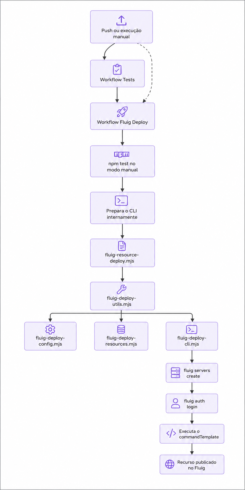

Nesta aula você irá contribuir com um projeto Fluig real chamado fluig-viagens-app, onde irá desenvolver um dataset responsável por fornecer os dados para o select de países, com testes unitários em Node.js e um pipeline de GitHub Actions que fará o deploy automático no servidor Fluig.
Ao longo do codelab, você vai criar e testar esse dataset, organizar a automação de testes e entender como o deploy é executado com o Fluig CLI dentro do pipeline.
Atividades deste laboratório
- Clonar um projeto base já preparado para a aula.
- Completar os arquivos principais colando trechos de código guiados.
- Desenvolver um dataset Fluig para listar países.
- Testar o dataset fora do servidor usando
node --test. - Configurar o workflow de testes contínuos.
- Entender o fluxo de deploy com o Fluig CLI e validar a execução em
dry_run.
O que você vai aprender
- Como escrever um dataset Fluig simples e reutilizável.
- Como simular globais do Fluig para rodar testes localmente.
- Como conduzir a implementação com blocos reais de copiar e colar.
- Como organizar um pipeline de testes que protege a branch
main. - Como separar o deploy em fluxo principal e módulos menores por responsabilidade.
- Como o GitHub Actions orquestra testes, autenticação e publicação de recursos.
O que você vai construir
fluig-viagens-app/
├── fluig.json # Configuração do projeto, do CLI e do deploy
├── package.json # Script de teste (node --test)
├── .gitignore
├── datasets/
│ └── ds-viagens-paises.js # Dataset de países para uso em formulários de viagem
├── tests/
│ ├── helpers/ # Mocks de globais Fluig e loader de scripts via vm
│ └── datasets/
│ └── ds-viagens-paises.test.js # Testes unitários do dataset de países
├── events/ forms/ mechanisms/ reports/ # Pastas de recursos (vazias por enquanto)
├── wcm/layout/ wcm/widget/
├── workflow/diagrams/ workflow/literals/ workflow/scripts/
└── .github/
├── workflows/
│ ├── fluig-tests.yml # Pipeline de testes unitários
│ └── fluig-deploy.yml # Pipeline de deploy
└── scripts/
├── setup-standalone-cli.sh # Usado internamente pelo workflow
├── fluig-deploy-config.mjs # Leitura de config e validação de ambiente
├── fluig-deploy-resources.mjs # Descoberta de arquivos e nome lógico do recurso
├── fluig-deploy-cli.mjs # Autenticação, comandos e execução do CLI
├── fluig-deploy-utils.mjs # Fachada de compatibilidade para os módulos
└── fluig-resource-deploy.mjs # Mantém visível o fluxo principal do CLI
Verifique cada item abaixo antes de começar. Cole os comandos no seu terminal.
- Node.js 20 ou superior (o projeto usa o test runner nativo do Node):
node --version
- Git instalado e configurado:
git --version
- Uma conta no GitHub (para criar o repositório remoto e os pipelines).
Se o repositório já existir no GitHub, o primeiro passo é clonar esse projeto para a sua máquina. No exemplo abaixo, usamos a URL SSH do repositório:
Repositório: https://github.com/cardevisi/fluig-viagens-app
git clone git@github.com:cardevisi/fluig-viagens-app.git
cd fluig-viagens-app

Antes de entrar nos arquivos, vale ver o fluxo completo do deploy em uma visão mais alta. A ideia é enxergar primeiro a sequência principal e depois detalhar cada parte ao longo da aula.

No fluxo automatico, o deploy so continua depois que o workflow Tests termina com sucesso na branch main. No fluxo manual, o proprio workflow de deploy executa o npm test antes de seguir.
Neste codelab, o projeto base já vem pronto. Aqui o objetivo é apenas conferir o comando de teste que a turma vai usar durante a aula.
{
"name": "fluig-viagens-app",
"version": "1.0.0",
"private": true,
"description": "Projeto de viagens com pipeline de deploy automatizado via GitHub Actions",
"scripts": {
"test": "node --test"
},
"engines": {
"node": ">=20"
}
}
Repare que não há dependências externas: node --test é o test runner nativo do Node.js (disponível desde a versão 18+), então não é preciso instalar bibliotecas extras para rodar os testes.
O fluig.json é o arquivo que descreve o projeto e como fazer o deploy dos recursos. É a peça central que os scripts de CI vão ler.
{
"name": "fluig-viagens-app",
"description": "Projeto de viagens com pipeline de deploy automatizado via GitHub Actions",
"version": "1.0.0",
"author": "TOTVS",
"license": "MIT",
"fluigVersion": "2.0.0",
"type": "application",
"cli": {
"mode": "standalone",
"downloadUrl": "https://github.com/SEU_USUARIO/fluig-viagens-app/releases/download/v1.0.0/fluig-cli-linux-x64",
"sha256": "",
"serverName": "fluig-ci",
"outputPath": ".github/bin/fluig-cli"
},
"resources": {
"dataset": {
"directory": "datasets",
"extensions": [".js"]
}
},
"deploy": {
"defaultResourceType": "dataset",
"commandTemplate": "export resource --projectPath {{projectRoot}} --resourceType {{resourceType}} --resourceName {{resourceName}} --serverName {{serverName}}"
}
}
Entendendo cada bloco
Chave | Para que serve |
|
|
| URL do asset de release do GitHub de onde o binário é baixado |
| Checksum esperado do binário, para validar integridade (opcional) |
| Nome lógico do servidor que o CLI vai registrar |
| Onde o binário baixado é salvo localmente (cache do workspace) |
| Pasta varrida em busca de recursos do tipo |
| Comando executado para cada recurso encontrado, com placeholders |
Placeholders do commandTemplate
Placeholder | Valor |
| Caminho relativo do arquivo (ex.: |
| Caminho absoluto do arquivo |
| Nome lógico enviado ao CLI, com hífens convertidos para |
| Tipo do recurso (ex.: |
| Caminho absoluto da raiz do repositório |
| Nome do servidor criado e autenticado pelo CLI |
Abra o arquivo datasets/ds-viagens-paises.js. O projeto base já traz a estrutura pronta e neste passo a ideia é colar os trechos que faltam para o dataset funcionar corretamente.
Scripts de dataset do Fluig rodam no engine JavaScript do servidor, que injeta globais como DatasetBuilder e DatasetFieldType automaticamente — você não precisa importar nada.
Trecho 1: colunas do dataset
Cole este bloco logo depois de var dataset = DatasetBuilder.newDataset();:
// Define as colunas do dataset
dataset.addColumn("codigo", DatasetFieldType.STRING);
dataset.addColumn("nome", DatasetFieldType.STRING);
dataset.addColumn("sigla", DatasetFieldType.STRING);
Trecho 2: lista inicial de países
Cole este bloco no lugar da lista vazia de paises:
var paises = [
{ codigo: "BRA", nome: "Brasil", sigla: "BR" },
{ codigo: "USA", nome: "Estados Unidos", sigla: "US" },
{ codigo: "ARG", nome: "Argentina", sigla: "AR" },
{ codigo: "CHL", nome: "Chile", sigla: "CL" },
{ codigo: "URY", nome: "Uruguai", sigla: "UY" },
{ codigo: "PRY", nome: "Paraguai", sigla: "PY" },
{ codigo: "BOL", nome: "Bolívia", sigla: "BO" },
{ codigo: "PER", nome: "Peru", sigla: "PE" },
{ codigo: "COL", nome: "Colômbia", sigla: "CO" },
{ codigo: "VEN", nome: "Venezuela", sigla: "VE" },
{ codigo: "MEX", nome: "México", sigla: "MX" },
{ codigo: "DEU", nome: "Alemanha", sigla: "DE" },
{ codigo: "ESP", nome: "Espanha", sigla: "ES" },
{ codigo: "PRT", nome: "Portugal", sigla: "PT" },
{ codigo: "FRA", nome: "França", sigla: "FR" },
{ codigo: "ITA", nome: "Itália", sigla: "IT" },
{ codigo: "GBR", nome: "Reino Unido", sigla: "GB" },
{ codigo: "JPN", nome: "Japão", sigla: "JP" },
{ codigo: "CHN", nome: "China", sigla: "CN" },
{ codigo: "AUS", nome: "Austrália", sigla: "AU" },
];
Trecho 3: adicionando as linhas do dataset
Cole este bloco antes do return dataset;:
// Adiciona cada país como uma linha no dataset
for (var i = 0; i < paises.length; i++) {
var pais = paises[i];
dataset.addRow([pais.codigo, pais.nome, pais.sigla]);
}
console.log("Dataset de países criado com sucesso. Total de países: " + paises.length);
console.log("Exemplo de país: " + JSON.stringify(paises[0]));
Como o DatasetBuilder/DatasetFieldType só existem dentro do servidor Fluig, para testar em Node.js criamos mocks dessas globais e carregamos o script de dataset em um sandbox isolado (node:vm), sem precisar de um servidor Fluig real.
Teste do dataset de países
Abra o arquivo tests/datasets/ds-viagens-paises.test.js e cole os trechos abaixo nos testes correspondentes.
Trecho 1: colunas esperadas
Cole este conteúdo dentro do teste define as colunas codigo, nome e sigla como STRING:
assert.deepEqual(
columns.map((column) => column.name),
["codigo", "nome", "sigla"]
);
assert.equal(
columns.every((column) => column.type === "STRING"),
true
);
Trecho 2: quantidade de países
Cole este trecho dentro do teste retorna 20 países:
assert.equal(rows.length, 20);
Trecho 3: cada linha do dataset
Cole este trecho dentro do teste cada linha possui codigo, nome e sigla preenchidos:
for (const row of rows) {
assert.equal(row.length, 3);
for (const value of row) {
assert.equal(typeof value, "string");
assert.notEqual(value.trim(), "");
}
}
Trecho 4: dados do Brasil
Cole este trecho dentro do teste inclui o Brasil com os dados corretos:
const brasil = rows.find((row) => row[0] === "BRA");
assert.deepEqual(Array.from(brasil), ["BRA", "Brasil", "BR"]);
Trecho 5: códigos sem duplicidade
Cole este trecho dentro do teste não possui códigos de país duplicados:
const codigos = rows.map((row) => row[0]);
assert.equal(new Set(codigos).size, codigos.length);
Rode os testes localmente
npm test
Você deve ver 5 sub-testes passando (colunas, quantidade de linhas, campos preenchidos, dados do Brasil e ausência de duplicados).
Esse workflow roda os testes automaticamente em pull requests e em pushes para qualquer branch relevante, inclusive a main. Assim, o deploy automático pode ouvir a conclusão desse workflow e só publicar recursos quando os testes terminarem com sucesso.
Abra o arquivo .github/workflows/fluig-tests.yml e complete os pontos abaixo.
Trecho 1: caminhos monitorados no push
Cole este bloco dentro de on.push.paths:
- "datasets/**"
- "tests/**"
- "fluig.json"
- ".github/scripts/**"
- ".github/workflows/**"
- "package.json"
Trecho 2: caminhos monitorados no pull_request
Cole o mesmo bloco dentro de on.pull_request.paths:
- "datasets/**"
- "tests/**"
- "fluig.json"
- ".github/scripts/**"
- ".github/workflows/**"
- "package.json"
Trecho 3: comando do step de testes
Cole este comando no step Run dataset unit tests:
run: npm test
Este é o pipeline mais importante do projeto: ele prepara o CLI nos bastidores, autentica em um servidor Fluig e publica os recursos (datasets, por enquanto). Para a aula, vamos começar pelo script principal que orquestra o deploy.
1. Arquivos auxiliares já preparados
No projeto base, estes arquivos já estarão completos:
.github/scripts/fluig-deploy-config.mjs.github/scripts/fluig-deploy-resources.mjs.github/scripts/fluig-deploy-cli.mjs.github/scripts/fluig-deploy-utils.mjs
Assim a turma consegue focar na história principal do deploy, sem se perder nos detalhes de apoio.
2. Complete o script principal do deploy
Abra o arquivo .github/scripts/fluig-resource-deploy.mjs e cole os trechos abaixo nos pontos indicados pela estrutura base.
Trecho 1: validação e leitura da configuração
Cole este bloco logo depois de const dryRunEnabled = isDryRunEnabled();:
ensureRequiredDeployEnvironment({ dryRunEnabled });
const resourceType = getSelectedResourceType({ fluigProjectConfig });
const resourceSettings = getResourceSettings({
fluigProjectConfig,
resourceType,
});
const cliBinaryPath = resolveFluigCliBinaryPath({
workspaceRootDir,
fluigProjectConfig,
});
const deployCommandTemplate = resolveDeployCommandTemplate({
fluigProjectConfig,
});
const resourceFiles = await listResourceFilesForDeploy({
workspaceRootDir,
resourceSettings,
});
Trecho 2: autenticação do CLI
Cole este bloco depois de printDeploySummary(...):
await authenticateFluigCli({
cliBinaryPath,
fluigServerConnection,
dryRunEnabled,
workingDirectory: workspaceRootDir,
});
Trecho 3: montagem do comando de deploy
Cole este bloco dentro do for (const resourcePath of resourceFiles):
const deployCommand = createResourceDeployCommand({
cliBinaryPath,
deployCommandTemplate,
resourcePath,
resourceType,
workspaceRootDir,
cliServerName: fluigServerConnection.serverName,
});
Agora que o script principal já está pronto, o próximo passo é montar o workflow de deploy no mesmo estilo que fizemos no workflow de testes.
Complete o workflow que orquestra o deploy
Abra o arquivo .github/workflows/fluig-deploy.yml e complete os blocos abaixo.
Trecho 1: workflow observado pelo workflow_run
Cole este bloco dentro de on.workflow_run:
workflows:
- Tests
types:
- completed
Trecho 2: condição do job deploy
Cole esta condição na chave if do job:
if: >
github.event_name == 'workflow_dispatch' ||
(
github.event_name == 'workflow_run' &&
github.event.workflow_run.conclusion == 'success' &&
github.event.workflow_run.head_branch == 'main'
)
Trecho 3: checkout da referência correta
Cole este bloco dentro do step Checkout:
with:
ref: ${{ github.event_name == 'workflow_run' && github.event.workflow_run.head_sha || github.sha }}
Trecho 4: comando de teste no disparo manual
Cole este bloco no step Run dataset unit tests:
if: github.event_name == 'workflow_dispatch'
run: npm test
Trecho 5: preparação do CLI standalone
Cole este comando no step standalone:
run: bash .github/scripts/setup-standalone-cli.sh
Trecho 6: execução do deploy
Cole este comando no step Execute Fluig deploy:
run: node .github/scripts/fluig-resource-deploy.mjs
Confira o repositório no GitHub
Neste treinamento, o repositório base já estará pronto no GitHub. Antes de começar a execução, confirme apenas se:
- o repositório correto foi clonado;
- a branch usada na aula é a
main; - a aba Actions está habilitada no projeto.
Configure os Secrets (dados sensíveis)
No GitHub, acesse Settings › Secrets and variables › Actions › Secrets e crie:
Secret | Descrição |
| URL base do servidor Fluig (ex.: |
| Usuário de autenticação no Fluig |
| Senha de autenticação no Fluig |
Configure as Variables (dados não sensíveis, opcionais)
Em Settings › Secrets and variables › Actions › Variables, você pode sobrescrever o que está no fluig.json:
Variável | Descrição |
| Nome lógico do servidor no CLI |
| URL de download do binário do Fluig CLI |
| Checksum SHA-256 esperado do binário |
| Template do comando de deploy |
Rode o pipeline em modo dry_run
- Acesse a aba Actions do repositório.
- Selecione o workflow Fluig Deploy → Run workflow.
- Deixe
resource_type = dataset,resource_pathvazio e marquedry_run = true. - Clique em Run workflow e acompanhe o log do job
deploy.
Você verá os comandos do Fluig CLI sendo exibidos (com a senha oculta como ***), mas nada será executado de verdade — é a forma segura de validar toda a esteira sem precisar de um servidor Fluig real.
Você completou os principais trechos do fluig-viagens-app e agora entende:
- Como um dataset Fluig é escrito e como testá-lo fora do servidor com
node:vm. - Como o
fluig.jsoncentraliza a configuração do CLI, dos recursos e do deploy. - Como funciona um pipeline de testes (
fluig-tests.yml) que protege a branchmain. - Como funciona um pipeline de deploy (
fluig-deploy.yml) que autentica no servidor e publica recursos automaticamente.
Para continuar praticando
- Adicione um novo dataset em
datasets/e o respectivo teste emtests/datasets/. - Experimente rodar o workflow com
resource_pathapontando para um único arquivo. - Explore os diretórios
forms/,wcm/widget/eworkflow/scripts/para expandir o projeto além dos datasets.
Referências
- Repositório de referência: https://github.com/cardevisi/fluig-viagens-app
- Material do codelab: docs/codelab-fluig-viagens-app.md
- README.md do projeto original, com detalhes adicionais da implementação.